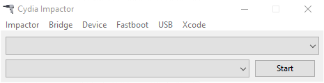

App Installers and IPA Libaries are two different ways of installing Apps. App Installer doesn't need a computer, but can get revoked at any time. IPA Libaries need a computer, they can't get revokek at any time, but they need to be refreshed every 7 days.
App Installer
App Installers are used to install:
- Tweaked Apps (Apps with Modifications)
- Hacked Games
- Emulators
- Screen Recorder
- Jailbreaks
- Free Appstore Apps
without the Appstore by using Profiles.
In order to install them you need to visit the following websites (icons) and press download.

An opening window will ask you to install. When the icon appears on the homescreen you need to trust the profile under Settings - General - Profile and Device management to open the apps. Now you can use these App Installers. Profiles can get revoked at any time.
IPA Libary
IPA Liberies are used to install the under App Installer listed Apps (e.g. Tweaked Apps, Hacked Games) without the possibility of getting revoked at any time. You will create your own profile which you have to refresh every 7 days (data won't get lost). You need a computer.
Download Impactor and the wanted Apps from the other two links to your computer.
When the download is finished, open Impactor.

Connect your iPhone to the computer. Click Device and then Install Package.... Select the wanted .ipa-file (downloaded Apps from the other two links, Apps are saved as .ipa-files). Now put in your Apple-ID and Password. These details won't be saved and are just used to create an Apple developer profile. The Apps will install automaticly on your device.
Only for educational purpose!